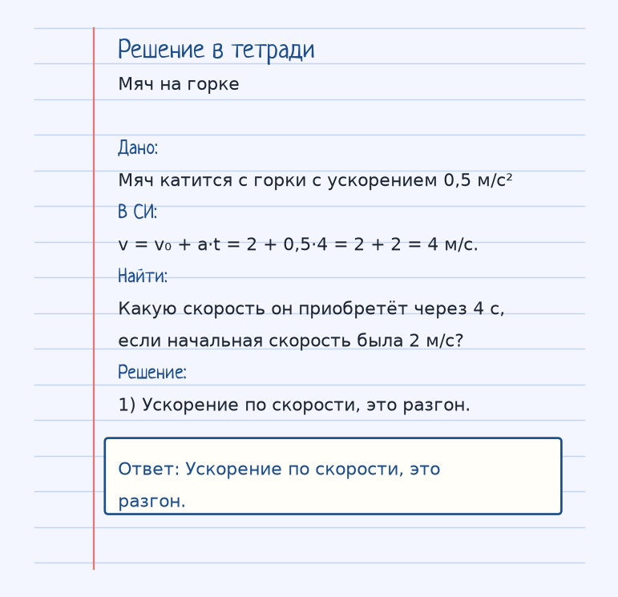
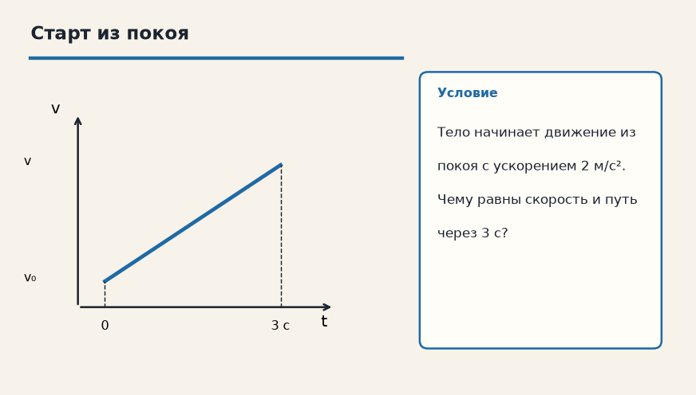

Держи картинку, не строчку. Если можешь показать рукой, куда едет тело и что его толкает, формула уже почти твоя. Ниже — как устроена тема «Равноускоренное движение», где обычно спотыкаются, и два разбора до ответа.
Показ к теме. Это условие, не шпаргалка.
Сначала смысл
Скорость меняется одинаково за каждую секунду. Появляется ускорение a. Главное правило: если ускорение направлено по скорости — разгон, против — торможение.
При равноускоренном движении скорость меняется на одну и ту же величину за каждую секунду. Эту величину и называют ускорением a. Если a направлено туда же, куда скорость, тело разгоняется. Если a против скорости — тормозит, и скорость уменьшается.
Две рабочие формулы карточки: v = v₀ + a·t говорит, какой станет скорость, а S = v₀·t + (a·t²)/2 — какой путь накопится. v₀ — это скорость в тот момент, который мы назвали нулём времени, а не «какая-то скорость вообще».
Из покоя v₀ = 0, и формулы короче: v = a·t, S = (a·t²)/2. Пример с мячом на горке как раз про первую формулу: 2 + 0,5·4 = 4 м/с. Путь в той задаче не спрашивали, и подставлять его туда не нужно.
Как решать. Выпиши величины с рисунка к примеру «Мяч на горке». Условие: Мяч катится с горки с ускорением 0,5 м/с². Какую скорость он приобретёт через 4 с, если начальная скорость была 2 м/с? Дальше подставляй их в формулу этой темы и сверяй шаги с решением под картинкой — оно закрыто, пока не попробуешь сам. Второй рисунок, «Старт из покоя», тот же приём на других данных: Тело начинает движение из покоя с ускорением 2 м/с². Чему равны скорость и путь через 3 с? Если оба примера сходятся, тему можно нести на контрольную.
Как читать формулу
v = v₀ + a · t
S = v₀ · t + (a · t²) / 2
v₀ — начальная скорость (м/с), a — ускорение (м/с²).
v₀ — начальная скорость (м/с), v — скорость спустя время t, a — ускорение (м/с²), S — путь (м).
Чтобы осталось в голове
Ты разгоняешься на светофоре на спортивной машине. Каждую секунду скорость растет на 5 км/ч.
На светофоре спортивная машина добавляет скорость равными порциями: например, по 5 км/ч за каждую секунду. Это и есть постоянное ускорение.
Где обычно спотыкаются
Путают v₀ и v. Если тело начинает двигаться из состояния покоя — v₀ = 0.
Путают v₀ и v. v₀ — скорость в начале выбранного промежутка. Если тело трогается из покоя, v₀ = 0, а не «примерно ноль».
Дальше две задачи. Сначала схема. Когда сам набросаешь ход, открой тетрадь — там дано, перевод в СИ, шаги и ответ в рамке.
Разбор 1
Мяч на горке
Мяч катится с горки с ускорением 0,5 м/с². Какую скорость он приобретёт через 4 с, если начальная скорость была 2 м/с?
На схеме только условие. Ответа там нет — его ещё надо получить.
Смотри на порядок, не на красивое число: сначала единицы, потом формула, потом ответ.
Дано. Мяч катится с горки с ускорением 0,5 м/с²
В СИ.
v = v₀ + a·t = 2 + 0,5·4 = 2 + 2 = 4 м/с.
Найти. Какую скорость он приобретёт через 4 с, если начальная скорость была 2 м/с?
Решение.
Ускорение по скорости, это разгон.
Ускорение по скорости, это разгон.

Разбор 2
Старт из покоя
Тело начинает движение из покоя с ускорением 2 м/с². Чему равны скорость и путь через 3 с?

На схеме только условие. Ответа там нет — его ещё надо получить.
Смотри на порядок, не на красивое число: сначала единицы, потом формула, потом ответ.
Дано. Тело начинает движение из покоя с ускорением 2 м/с²